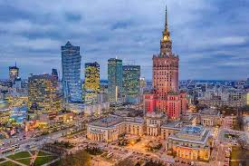

Mazowieckie
Najważniejsze miasta
Warszawa
Warszawa, stolica Polski, to dynamiczne miasto łączące nowoczesność z historią. Symbolami miasta są Zamek Królewski, Stare Miasto oraz Pałac Kultury i Nauki. Warszawa to także centrum biznesowe i kulturalne, pełne muzeów, teatrów i parków, takich jak Łazienki Królewskie. Zamek Królewski
Barokowo-klasycystyczna rezydencja królów Polski, odbudowana po II wojnie światowej. W środku można podziwiać bogato zdobione sale, królewskie apartamenty i obrazy Canaletta.Muzeum Powstania Warszawskiego
Interaktywne muzeum poświęcone bohaterom Powstania Warszawskiego z 1944 roku. Ekspozycja łączy archiwalne nagrania, rekwizyty wojenne i multimedialne instalacje.Łazienki Królewskie
Rozległy park z pałacem na wodzie, amfiteatrem i pomnikiem Chopina. Miejsce to zachwyca pięknem przyrody i bogatą historią.
Płock
Płock to jedno z najstarszych miast w Polsce, malowniczo położone nad Wisłą. Jego wizytówką jest Wzgórze Tumskie z katedrą, gdzie znajdują się groby władców Polski. Miasto jest również ważnym ośrodkiem przemysłowym, a coroczny Audioriver Festival przyciąga miłośników muzyki elektronicznej.Katedra Wniebowzięcia NMP
Jedna z najstarszych katedr w Polsce, skrywająca groby władców Polski. W jej wnętrzu można podziwiać piękne freski i słynną Złotą Bramę.
Muzeum Mazowieckie
Słynie z unikalnej kolekcji secesji, prezentującej meble, obrazy i biżuterię z przełomu XIX i XX wieku. To prawdziwa gratka dla miłośników sztuki i designu.
Bulwary nad Wisłą
Nowoczesna promenada idealna na spacery i relaks. Latem odbywają się tu koncerty, festiwale i pokazy plenerowe.Radom
Radom to miasto w centralnej Polsce, znane z bogatej historii i przemysłu. Najważniejszym wydarzeniem jest Międzynarodowe Pokazy Lotnicze Air Show, przyciągające fanów lotnictwa. Warto zobaczyć także zabytkowy Rynek oraz Zamek Królewski, który jest świadectwem dawnych dziejów miasta.
Muzeum Wsi Radomskiej
Skansen prezentujący tradycyjne drewniane chaty, młyny i kuźnie z regionu. To świetne miejsce, by poczuć klimat dawnej wsi mazowieckiej.
Zamek Królewski w Radomiu
Pozostałości średniowiecznego zamku, który niegdyś był ważnym ośrodkiem władzy. Obecnie na jego terenie odbywają się wydarzenia kulturalne i rekonstrukcje historyczne.Deptak na ulicy Żeromskiego
Główna arteria miasta, pełna klimatycznych kawiarni i zabytkowych kamienic. To idealne miejsce na spacer i poznanie historycznego centrum Radomia.